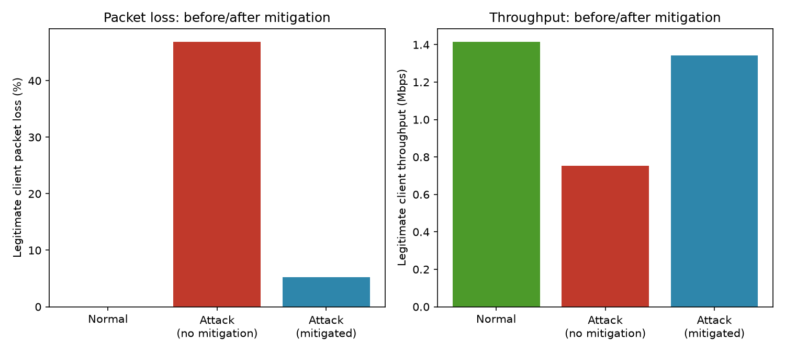
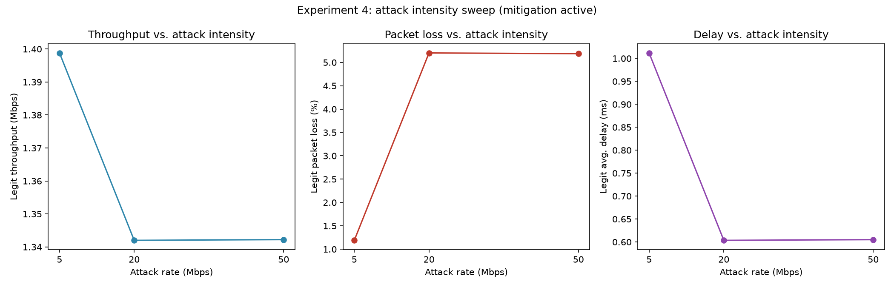
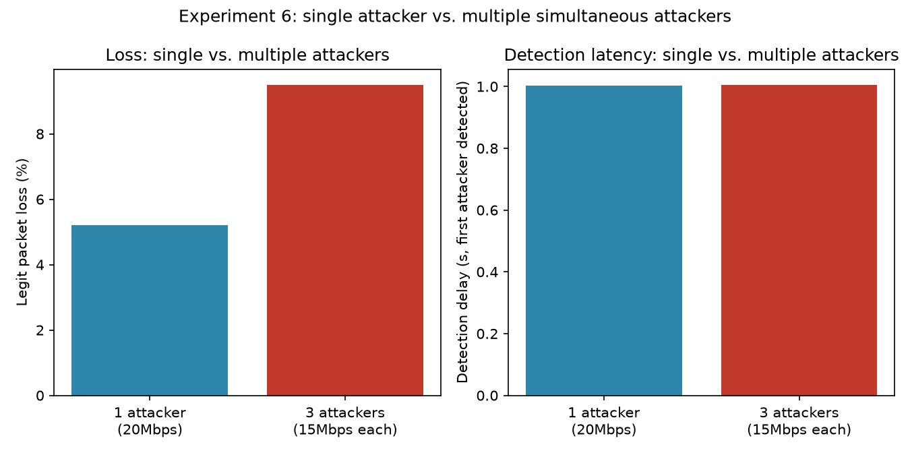

01Project objective
Demonstrate, with a real NS-3 simulation (not a diagram or a mock), the full SDN DDoS-defense pipeline — and measure it, rather than describe it:
MonitorInterval (default 1s).The project measures throughput, packet loss, delay, and detection latency, and how each changes with attack intensity, detection threshold, and attacker count — all 13 planned project phases are complete, from the smallest connectivity check up through the full sweep of experiments and generated graphs below.
02Architecture & design
Point-to-point, not shared, links
Every host — client, attacker, or server — has its own dedicated CSMA link into the switch. There is no shared Ethernet segment, which means a per-port rate is, in this topology, a per-source rate — the property that makes plain port-statistics polling sufficient for detection.
A deliberately slow victim link
The server's own access link is the slowest in the topology (10 Mbps default vs. 100 Mbps for everyone else), modeling the actual resource a volumetric flood exhausts: the victim's own bandwidth, not the core network.
One controller class, two experiments
SdnController implements L2 learning-switch forwarding, OpenFlow monitoring, threshold detection, and DROP-rule mitigation in one place. An EnableMitigation attribute toggles mitigation off per run, so the exact same class drives both the "attack, no mitigation" and "attack, mitigated" experiments.
Real OpenFlow, not a simulation of a simulation
The switch is a real OFSwitch13Device backed by the BOFUSS OpenFlow 1.3 datapath library — actual OFPMP_PORT_STATS multipart messages and actual flow-mod drop rules, not a scripted stand-in for them.
03How detection works
No machine learning, no statistics beyond a single comparison — this was a hard project requirement, not a simplification chosen for convenience.
1. Monitoring
Every MonitorInterval seconds (default 1s), SdnController::RequestPortStats
sends a real OpenFlow port-statistics request (the
stats-port dpctl command, i.e. an OFPMP_PORT_STATS multipart
message) to the switch. The switch replies with real packet/byte
counters it maintains per port; ProcessPortStatsReply computes
(current − previous) / interval for packets/sec and bytes/sec per port,
logging every sample to monitor-stats.csv.
2. Source identification
Because every host sits on its own dedicated switch port, a port number is a source identity in this topology. The controller also keeps a MAC-learning table (the same one used for L2 forwarding) so it can log a human-readable MAC alongside the port number.
3. Threshold comparison
Every time a rate is computed, SdnController::CheckThreshold runs the entire detection rule:
bool isSuspicious = packetsPerSec > m_pktRateThreshold;
m_pktRateThreshold is an ns3::TypeId attribute
(PacketRateThreshold, default 1000 packets/sec),
settable per run without recompiling. Every transition
(clean→suspicious or the reverse) is logged with its simulation
timestamp to detections.csv.
04How mitigation works
When a port transitions to suspicious, SdnController::InstallMitigation
sends a real OpenFlow flow-mod:
flow-mod cmd=add,table=0,prio=200 in_port=<suspicious port>No action/instruction clause at all — OpenFlow 1.3 defines a flow entry with an empty instruction set as a silent drop. Priority 200 sits above both the learned forwarding flows (priority 100) and the table-miss entry (priority 0), so this rule is matched first: the source's traffic never reaches the rest of the pipeline, and never reaches the bottleneck link to the server.
If the port's rate later drops back under the threshold,
RemoveMitigation deletes the rule
(flow-mod cmd=del,table=0 in_port=<port>), restoring normal
forwarding — this is the mechanism behind "legitimate traffic
recovers" if a previously-flagged source goes quiet.
05Experiments & methodology
Six experiment groups, eleven total runs, each writing
flowmon.xml (real per-flow throughput/delay/loss via ns-3
FlowMonitor), monitor-stats.csv, detections.csv, switch
datapath logs, and (where enabled) per-port pcaps. Nothing in the
results or graphs below is hand-entered or estimated — all of it is
generated directly from these files by scripts/analysis/generate_graphs.py.
| # | Group | What it varies |
|---|---|---|
| 1 | exp1-normal | Normal traffic only — the baseline. |
| 2 | exp2-attack-no-mitigation | Attack; detection logs transitions but never blocks. |
| 3 | exp3-attack-mitigated | Attack with full detection + mitigation active. |
| 4 | exp4-intensity-{low,medium,high} | Attack rate: 5 / 20 / 50 Mbps, mitigated. |
| 5 | exp5-threshold-{200,1000,5000} | Detection threshold (pkt/s), fixed 20 Mbps attack, mitigated. |
| 6 | exp6-attackers-{1,3} | 1 vs. 3 simultaneous attackers, mitigated. |
Key tunable parameters
| Flag | Default | Meaning |
|---|---|---|
--numClients | 3 | Legitimate client count |
--perClientRate | 500Kbps | Each client's UDP send rate |
--numAttackers | 1 | Attacker count |
--attackRate | 20Mbps | Each attacker's flood rate |
--threshold | 1000 | Detection threshold, packets/sec |
--monitorInterval | 1.0 | Controller polling interval, seconds |
--simTime | 20 | Total simulation duration, seconds |
06Results
| Experiment | Legit loss | Legit throughput | Avg delay | Detection delay |
|---|---|---|---|---|
| Normal traffic | 0.0% | 1.416 Mbps | 0.147 ms | — |
| Attack, no mitigation | 46.9% | 0.752 Mbps | 1.19 ms | 1.003 s |
| Attack, mitigated | 5.2% | 1.342 Mbps | 0.604 ms | 1.003 s |
| Intensity: low (5 Mbps) | 1.19% | 1.399 Mbps | 1.012 ms | 1.003 s |
| Intensity: medium (20 Mbps) | 5.2% | 1.342 Mbps | 0.604 ms | 1.003 s |
| Intensity: high (50 Mbps) | 5.19% | 1.342 Mbps | 0.605 ms | 1.003 s |
| Threshold: 200 pkt/s | 5.2% | 1.342 Mbps | 0.604 ms | 1.003 s |
| Threshold: 1000 pkt/s | 5.2% | 1.342 Mbps | 0.604 ms | 1.003 s |
| Threshold: 5000 pkt/s | 5.2% | 1.342 Mbps | 0.604 ms | 1.003 s |
| 1 attacker, mitigated | 5.2% | 1.342 Mbps | 0.604 ms | 1.003 s |
| 3 attackers, mitigated | 9.5% | 1.281 Mbps | 0.761 ms | 1.006 s |




07Bugs found along the way
Two real correctness bugs were found while building traffic monitoring — both confirmed with actual packet captures before being called "fixed," not assumed.
eth_dst-only flow matching never learned a pure responder's MAC
switch-stats-*.log showed every single data packet hitting
the controller via packet-in for the entire run, well past
steady state. Cause: flow-mod rules matched only
eth_dst = <learned mac>, so a host that only ever replies
(the server) never had its own MAC learned — its replies always
matched the requester's already-installed flow and were forwarded
without ever reaching the controller. Fixed by matching on the
(eth_src, eth_dst) pair, the same approach the standard Ryu
simple_switch_13 tutorial controller uses.
Unrealistic channel delay silently capped every host to ~500 pps
A configured 20 Mbps flood (~39,062 expected pkt/s at 64-byte
packets) measured only ~350–430 pkt/s leaving the attacker's NIC —
regardless of whether the configured rate was 1 Mbps or
20 Mbps. Cause: every CSMA link used Delay = 2ms
(WAN-style latency on what should model a LAN); ns-3's CsmaChannel
holds the shared bus for the full propagation delay per
transmission, capping acquisitions at 1/0.002 = 500/sec
regardless of application rate. Misdiagnosed twice before being
found (first suspected switch capacity, then the default FqCoDel
queue discipline) — fixed by changing Delay to
MicroSeconds(2) on every link; verified the attacker's port
then showed ~39,062 pps, matching theory exactly.
08Known limitations / honest caveats
-
The detection-threshold sweep (Experiment 5) shows flat results
across 200/1000/5000 pkt/s because the tested attack
(~39,062 pkt/s) sits far above all three — a real property of
that experiment's specific setup, not a bug. A threshold
between the legitimate rate (~122 pkt/s) and a weaker attack
would be a more sensitive test; the parameters make this easy to
run (
--attackRate=1.5Mbps --threshold=300, for instance). -
Mitigation blocks by switch port, not by IP/MAC identity —
correct and sufficient for this topology (one host per port), but
would need extending (matching on
eth_src/ip_srcinstead ofin_port) for a topology where multiple hosts can share a port. -
Detection latency is bounded below by
MonitorInterval(default 1s) — an attack is never caught faster than one polling cycle. Lowering the interval trades CPU/control-channel overhead for faster detection.
09Tech stack & reproducing it
| Component | Version used |
|---|---|
| OS | Ubuntu 24.04.4 LTS under WSL2 |
| ns-3 | 3.40 (gitlab.com/nsnam/ns-3-dev, tag ns-3.40) |
| OFSwitch13 | 5.2.3 (github.com/ljerezchaves/ofswitch13) |
| GCC/G++ | 13.3.0 |
| CMake | 3.28.3 |
| Python | 3.12, matplotlib (for scripts/analysis/ graphs only) |
Full install steps, the exact apt package list, and two real
environment bugs (a glibc/strlcpy conflict on Ubuntu 24.04, and the
channel-delay issue above) are documented in
documentation/environment.md.
Once ns-3 + OFSwitch13 are built, this project's own code is driven by one script:
cd scripts
bash run-all.sh # build -> run every experiment -> generate graphs -> print summarySee the main README for the full command reference, including running a single simulation with custom parameters.